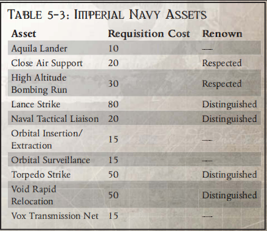
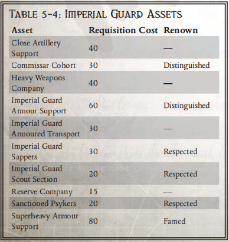
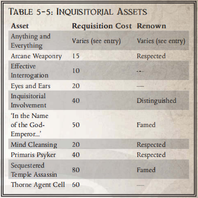
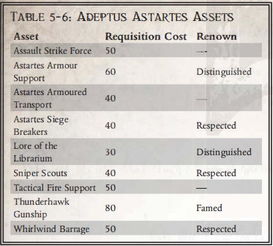

征用
“阿斯塔特是帝国战争之刃上的血刃，是一把剃刀，以其宽广的笔触和致命的刺击，切开整个异种文明，摧毁整个星系。然而，即使是最锋利的刀刃，也必须有坚实的钢铁和强大的臂膀作为后盾，才能挥舞它与敌人抗衡"。
——贤者塞拉瑞斯坦，《阿斯塔特的战术与试炼》
战斗兄弟不会像普通人那样囤积财富或争夺钱币。相反，他们的所有战争工具都由死亡守望提供，并在每次任务开始时分配给他们。然而，即使是帝国庞大的武器库和阿斯塔特军械库也不是无穷无尽的，赋予战斗兄弟执行任务的资源决定了他们装备的数量、支援的质量，以及他们的行动比其他人优先的程度。所有这些方面都被称为 “征用”（Requisition），是玩家为自己获取武器和装备的方法，玩家可根据任务需要从阿斯塔特军械库中提取武器和装备。然而，战列兄弟不仅可以使用征用点获得这些基本的战争工具，还可以获得其他类型的武器和支援，例如其他帝国编队的援助、额外的情报，甚至是强大的盟友和家臣。征用也可以有不同的使用方式，战斗兄弟可以将资源储存起来，在执行任务时使用，或者GM可以授予他们特殊类型的征用权，可以多次使用，或者用他们的声望提升他们的正常分配。本节将详细介绍使用 “征用”的其他方法和玩家可以使用 “征用 ”做的事情，以及根据杀戮小队可支配资源的性质和他们可能执行的任务类型，GM 处理 “征用”的不同方法。
任务和分配征用
征用与任务密切相关，任务的难度和目标的数量直接影响玩家在选择武器装备时可获得的征用点数。然而，GM 最终决定杀戮小队可获得的征用点数，并可根据实际情况对总点数进行调整，或减少征用点数以表示供应短缺或后勤问题，或增加征用点数以反映该地区帝国军队的物资流入，或作为 “大推进 ”的前奏。作为指导原则，即使在最极端的情况下，GM 也应尽量避免减少或增加玩家的综合需求量超过 50%，因为死亡守望总是会为其杀戮小队准备一些资源，尽管他们也有信心在不需要过多支持或援助的情况下完成既定任务。游戏管理者还应该记住，无论征用情况如何，也无论战区是否出现任何其他短缺，战斗兄弟总是拥有某些装备（例如他们最喜欢的武器和动力装甲）。
提高征用
死亡守望根据无数因素为其杀戮小队分配资源，例如他们必须面对的威胁程度、审判庭的影响和建议，以及最重要的，他们所掌握的可用材料。当然，并不是所有这些因素都不受战斗兄弟的控制，也不是所有的杀戮小队在死亡守望眼中都是平等的。GM可以让玩家利用他们在死亡守望中的声望和地位为他们的任务获取更多的资源，从而提高他们的需求量。每个玩家都可以选择让他的战友牺牲一些声望（降低一个等级，即从 “卓越”到 “尊敬”），并额外获得 1d10*等级的征用点数，在任务准备的征用步骤中使用。这些点数只适用于战兄的个人装备，不能用于购买帝国资产，也不能保存并添加到后备征用中。
示例 尼克的四级战友塔里乌斯为即将到来的任务分配了 70 点需求点数。他决定重数量轻质量，因此选择降低自己的声望来获得提升。尼克的角色声望值为 37，这意味着他“尊敬”。然而，他选择牺牲自己的声望值，将自己的声望值降为 “新兵”。这实际上并不会降低他的声望值，只是意味着在这次任务中，他只能征用“新兵”角色才能获得的装备。然后，他将获得提升；掷 1d10，得到7，再乘以他的等级 4，得到28。最后，他将此加到现有的70征用点上，总计 98。 |
储备征用
杀戮小队获得的资源并不都是死亡守望军械库中的武器和装备，有些是其他帝国部队的援助、额外的插入和撤离方法，甚至是诸如灵能者和熟练战术家等稀有人员的支持。有些资源甚至比这些更广泛，可能包括审判官的任务、轨道情报收集或与杀戮小队任务相关的隐藏传说。杀戮小队可能无法提前知道（或在任务准备期间无法获得）他们需要的资源。在这种情况下，GM 可以允许玩家保留一些需求点数，以便在任务过程中使用，而不是直接花掉。这种征用被称为 “储备征用”，由杀戮小队所有成员的未用点数组成（“储备征用 ”总是表示为一个公共点数池，而不是每个战友的个人总点数）。在任务过程中，可将此积分用于购买帝国资产（见下文）。任务结束时未使用的任何储备申购都将丢失。
示例 达米安、尼克和安德鲁正在执行一项任务。他们每人都获得了 60 点征用点数，可以用来购买额外的武器和装备。选择装备后，达米安还剩 25 点，吉姆剩 15 点，安德鲁剩 10 点。然后，他们将这些总点数合在一起，得出 50 点储备征用点数。 |
再生储备征用点
储备征用点数与普通征用点数不同，它可以在任务过程中再生。这代表死亡守望或杀戮小队的其他帝国盟友会根据他们的成功分配更多资源，或对他们的任务产生更大的兴趣。这样做有两种方式：
当玩家完成主要或次要目标时，GM 可以恢复玩家的部分储备需求。但是，只有在完成目标会立即对帝国有利时（例如攻破一个关口或清理一个登陆区，从而允许大量新兵涌入），才可以这样做。作为指导原则，每个主要目标应恢复 2d10+10征用点，而每个次要目标应恢复 1d10+5征用点。最后，GM 决定完成一个目标是否值得恢复任何征用。
杀戮小队可以通过 “兑现 ”杀戮标记来恢复部分储备征用，这反映了杀戮小队改变了优先级，或将重点从一个目标转移到另一个目标，并利用了该地区任何闲置的帝国资产。只有未完成目标中的杀戮标记才能以这种方式使用，从而减少为完成目标所付出的努力。因此，如果玩家决定从一个未完成的目标中使用 50 个标记，他们就会在储备标记池中恢复 25 点征用点。
在这两种情况下，以这种方式恢复的征用点数都不能使杀戮小队的储备超过其起始总点数（以任务开始时为准），而且一旦任务完成，所有储备征用点数仍将丢失。
征用和影响力
作为资源的一种衡量标准，征用可以被杀戮团队用来向 NPC 和同盟组织购买恩惠或影响力。实际上，玩家是在利用他们的一些下属或为他们预留的一些材料来贿赂、威胁和影响他人的行动。玩家可以使用 “声望 ”和 “影响 ”的规则来使用 “征用”（或 “储备征用”）。征用对 “Shock”没有影响（因为这是衡量战兄声望的个人标准），但可以用于 “ Favours”和 Boons or Strength and Support。在这两种情况下，每消耗满 20 点征用值，都会被算作一个声望值，以确定其效果。以这种方式使用征用点获得的好处适用于整个杀戮团队，而不仅仅是使用点数的战斗兄弟。
示例 安德鲁希望使用部分征用点数来影响一位帝国海军舰队舰长，并利用他的帮助来完成自己的任务目标之一。安德鲁选择了 “Favour”和“Boons”，花费 40 点征用点数进行影响，相当于牺牲了两级声望。这意味着他将获得 2d10+10 杀戮标记，用于完成其中一个任务目标。 |
帝国资产
“你要求？你要求！我的战术家告诉我，你们只有十二个新兵师、五个重步兵营和一个装甲团可供调遣，而我有七艘最光荣的战舰、我想调用的所有帝国卫队步兵团和装甲团......哦，当然还有皇帝陛下本人的神圣命令！”
——亚历克斯·基尔上将与霍拉斯提世界建立外交关系
虽然死亡守望杀戮小队被训练成一支独立的突击部队，经常深入敌后或长时间与盟友失去联系，但他们当然是在帝皇旗帜下聚集在一起的庞大军事组织的一部分。这意味着当他们需要时，战斗兄弟可以召唤军团、大型战争机器或致命专家来协助他们完成任务。这些额外资源和特殊盟友统称为 “帝国资产”（Imperial Assets），（如果这些资源和盟友可用，并且杀戮小队需要它们），它们可以被调用来协助玩家对抗人类的敌人。征用资产的方式与征用普通武器和装备的方式基本相同。不过，资产对整个杀戮小队都有好处，并不只属于征用资产的战友，因此玩家通常最好最后（在个人装备之后）从小队的剩余点数中选择资产。大多数资产都可以通过普通征用（任务准备期间）或储备征用（任务过程中）来选择。那些不能使用储备申购的资产会在它们的说明中注明。
帝国海军资产
到目前为止，帝国的大部分领土都是由世界之间的广袤虚空组成的，这是一片无法无天的广袤虚空，神帝的光辉在这里显得微弱而遥远。这些区域是帝国海军的领地；帝国海军由成千上万的扇区战舰和无数船只组成，在虚空中巡逻，保护帝国的边境以及世界之间的黑暗。杀戮小队在行动过程中可以请求帝国海军提供往返于世界表面的运输工具、地面攻击机，甚至从轨道上的船只发动攻击。玩家可以使用表 5-3：帝国海军资产来为他们的杀戮小队选择帝国海军的支持，根据他们的可用需求和声望等级来选择资产。

天鹰登陆艇
战斗兄弟征用了一艘从地表到轨道的海军天鹰登陆艇穿梭机。虽然没有武器，但天鹰登陆艇可以将杀戮小队从一个地点运送到行星表面的另一个地点，甚至在轨道上的船只之间运送。不过，它不适合在虚空中进行长途旅行，也不适合执行重型战斗任务，因为它只有轻型装甲，携带的燃料通常只够从轨道上的飞船往返一次（不过杀戮小队可以用它在行星表面上往返数次，而不是进入轨道）。天鹰登陆艇的飞行员对重型战斗区域也有些胆怯，这也是可以理解的，因为穿梭机并不是战斗飞船，他们会在杀戮小队可能遭遇重型火力的任何地方慎重着陆。
近距离空中支援
在支援地面行动时，帝国海军会使用大量大气层飞机，从空中优势战斗机到重型轰炸机。有了这一资产，“杀戮小队 ”就能获得“雷电”战斗机的支援，他们在执行任务时可以使用一次。一旦被召唤，该飞行队将需要 1d10 轮才能抵达（除非杀戮小队提前协调好了攻击行动），由 1d5+1 架 “雷电”战斗机组成。杀戮小队可以选择以下两种方式之一使用近距离空中支援：
狗斗： 近距离空中支援专门用于消灭敌人的空中支援。雷电战机将与敌机交战，将敌机引离杀戮小队（及其目标！）和/或彻底摧毁敌机。
游戏管理员应进行一次弹道技能测试，BS 值为 40（第一架雷电后每架雷电的奖励为 +10，这意味着两架雷电的总奖励为 +10）。掷骰的成功度与飞行中雷电战机的数量相等。掷骰的任何成功度都会消除该数量的敌机。每失败一度就表示有一架 “雷电”被击落。
在任何情况下，“雷电”战机的干预都会成功地重新引导和分散敌机对 “杀戮小队 ”活动的注意力（至少，敌机需要返回基地重新加油和重新武装）。
扫射： 近距离空中支援专用于对敌军或据点发动持续的地面攻击。GM应进行一次弹道技能测试，BS 值为 40（第一架雷电后每架雷电的奖励为 +10，这意味着两架雷电的总奖励为 +10）。掷骰子的成功度取决于飞行队中雷电战机的数量。掷骰的结果将作为远程攻击使用（无其他奖励），
使用以下武器之一：
自动加农炮：300 米；S/2/5；4d10+5 I；穿透力 4
激光加农炮：300 米；S/-/-；5d10+10 E；穿透力 10（由 GM 酌情决定，“雷电战机 ”可同时使用两种武器攻击斜线目标）。
高空轰炸
为了进行精度较低但破坏力更大的空中打击，战斗兄弟可以呼叫掠夺者轰炸机进行一次高空轰炸。这将使“杀戮小队 ”能够对直径约 5 公里的区域进行轰炸（鉴于轰炸机的精确度令人生疑，或多或少），夷平建筑物并摧毁暴露的目标。由于该区域内是否有东西被炸弹直接命中完全是随机的，因此造成的确切破坏量由GM说了算。不过，作为指导原则，所有非军事建筑都将被摧毁或严重损坏，而轰炸区域内没有掩体的任何人都将受到 6d10 能量伤害。独特的敌人和值得注意的 NPC 基本不会受到这种攻击的影响，在某种程度上可以避免最坏的影响。进行一次轰炸至少需要一个小时，但也可能需要更长时间，这由GM决定。
光矛攻击
杀戮小队能够从低轨道上的一艘帝国海军舰艇上发射一次光矛攻击。任何类型的轨道打击都具有可怕的误差，但同时也具有可怕的破坏力。轨道打击的优势还在于，它不同于任何类型的空中支援，几乎无法防御。当杀戮小队选择使用 “光矛打击 ”时，他们必须选择一个点（他们不需要看到这个点），然后将其坐标传送给轨道巡洋舰。然后，转发坐标的角色要进行一次挑战性（+0）弹道技能测试。如果他能看到目标点，并能使用占卜仪、自动感应护目镜或其他有助于确定位置的装备，则可获得 +10（由GM最终决定哪些装备可获得加分）。如果弹道技能测试成功，则光矛攻击命中目标 1 公里以内（按海军标准为靶心）。如果测试失败，光矛攻击会偏离目标一定公里数，偏离度等于失败度数的随机方向（使用《死亡守望》规则手册第 248 页上的散点图）。光矛攻击的撞击点周围 500 米内的任何物体都会被彻底蒸发。撞击点以外 1 千米内的任何物体都会受到可怕的伤害（5d10+10 E 伤害；Pen 10）。攻击的确切效果和屠杀程度由GM最终决定，不过被重型护盾保护的目标或深入地下的目标有可能幸存。
帝国资产、难度、技能和您 以下许多帝国资产都包含各种测试难度，并（偶尔）设定弹道技能特性，以代表各种资产执行任务的能力。这些难度和弹道技能值只是对 “平均 ”情况的建议，GM 可以根据资产本身的相对技能或经验，或任何其他影响资产使用的情况，随意调整这些资产的任何测试难度或弹道技能特性。例如，一支缺乏经验或装备不良的帝国卫队炮兵部队可以使近距离炮火支援的难度为 “困难”（-10）而不是 “挑战”。同样，一支由帝国海军飞行员组成的精英编队可以将近距离空中支援资产的初始弹道技能从 40 提高到 50。 此外，在与特定组织或指挥官互动时，总经理可酌情要求进行魅力、指挥或友谊测试，否则这些组织或指挥官可能不愿提供援助（例如，如果太空狼向黑暗天使分会请求援助）。某些天赋，如同伴、良好声誉、对手或敌人，也可能以这种方式发挥作用。 |
海军战术联络员
杀戮小队征用了一名海军战术联络员，该联络员可以从轨道上为他们提供战术建议。帝国战术专家通常用于指挥帝国卫队指挥官和大型地面部队的行动，有时也会被要求协助较小的编队，如死亡守望杀戮小队。战术联络员的存在意味着玩家在执行任务的过程中可以请他提供建议，例如如何最好地完成目标，或者哪种攻击方法对某些敌人或防御最有效。联络员拥有战术技能，所有技能组，智力为 50。
轨道投送/撤离
杀戮小队已经掌握了一种轨道插入和撤离方法，无论是通过重型登陆器还是其他方式。这样，他们就可以在他们选择的任何地点开始任务（只要该地点通常可以从轨道投放点到达），也可以在任何时候呼叫撤离（尽管撤离可能需要他们转移到一个可以到达的安全着陆区，以便接应他们）。插入的速度和准确性意味着 “杀戮小队 ”将始终在所选着陆区的几百米范围内着陆，而且往往能够绕过外围防御。在特殊情况下，GM 可以允许杀戮小队通过传送阵插入或撤离，为他们开辟新的选择，甚至允许他们出现在地下或防御建筑内。传送攻击非常危险，GM可以让队员出现在意想不到的环境中。
轨道占卜
轨道上的飞船可以利用它们的占卜阵列获取从高空监视地面目标的详细信息。杀戮小队已经获得了一艘在轨飞船为他们收集情报的服务，他们可以在任务中利用这艘飞船来了解前方的情况。在任务过程中的任何时候，玩家都可以选择使用他们的轨道监视器，尝试获取从太空中可以看到的行星表面区域的实时信息。然后，GM 可以让飞船进行一次感知为 50 的挑战性（+0）感知测试。至于飞船能收集到哪些信息，则由 GM 来决定。一般来说，每成功一度都会为杀戮小队提供额外的情报。建议 GM 秘密进行该测试，因为船只也有可能曲解视觉数据并向杀戮小队提供错误信息......
鱼雷打击
鱼雷打击与光矛打击类似，破坏力较小，但精确度更高。在所有方面，鱼雷打击的功能都与长枪打击类似，但有以下变化：一旦呼叫，鱼雷打击需要 1d5+2 个回合才能到达目标。弹着点 500 米范围内的任何物体都算作被 “穿甲导弹 ”击中，而 1000 米以外的任何物体都算作被 “破片导弹 ”击中。鱼雷攻击的唯一缺点是在接近过程中可能会被击落，如果攻击目标是有严密地对地轨道防御的区域，游戏管理者可以给敌人一次击落鱼雷攻击的机会。
虚空快速转移
在死亡守望或阿斯塔特修会不存在的情况下，由海军将战斗兄弟运送到他们的行动区域。杀戮小队获得了一艘星系舰船的运输能力，只要他们能到达轨道，就能在他们所在的系统内的世界和舰船之间穿梭。此外，他们还可以用这艘飞船运送装备或人员进出作战区域。不过，该运输船并不是武装战斗船只，不能提供战斗支援、轨道情报或通信支持。
音阵传送网
轨道上的飞船具有不受自然地理条件或便携式语音装置强度限制的优势，可以在遥远的星球间进行语音传输。一系列连接在一起的飞船还可以在全球范围内维持一个恒定的通讯网，让地面上的人员可以与地平线以外的其他地面单位进行通讯。杀戮小队要么已经获得了使用轨道通讯网的权限，要么已经获得了使用轨道通讯网的特殊许可。这样，只要他们能通过轨道通信传输与地球表面的任何其他帝国部队进行即时通信（通常是指只要他们没有深入地下或受到敌军干扰）。
帝国卫队资产
在帝国中，没有任何一支部队能像帝国卫队这样规模庞大、装备精良。就像皇帝的大锤一样，卫队代表着帝国统治的重压，也是所有讨伐和打击皇帝敌人的战役的终结者。无论战斗兄弟部署在哪里，帝国卫队都可能紧随其后，如果需要他们的蛮力，杀戮小队可能会要求他们提供部队、装甲和大炮。玩家可以使用表 5-4：帝国卫队资产为他们的杀戮小队选择帝国卫队的支持，根据他们的可用需求和声望等级从帝国卫队的资产中进行选择。

近距离炮火支援
帝国卫队以其重型火炮闻名于世，在大多数帝国战区，大炮的轰鸣声是战斗交响曲中的永恒旋律。战斗兄弟 “获得了一部分帝国卫队远程火炮的支援，如死亡直击导弹发射器或石化蜥蜴移动炮兵连。游戏管理者可以让玩家随意使用这些火炮（如果想限制使用，玩家只需为火炮配备有限的弹药即可）。不过，考虑到帝国卫队炮手一贯的精准度，这样做可能会有风险。呼叫火炮支援的角色会进行一次挑战性（+0）弹道技能测试。如果他能看到目标点，并能使用占卜仪、自动感应护目镜或其他有助于确定位置的装备，则可获得 +10 加分（哪些装备可获得加分由 GM 最终决定）。如果弹道技能测试成功，炮击就会命中目标。如果测试失败，则炮击偏离目标的米数等于失败度数乘以 20 的随机方向（使用《死亡守望》规则手册第 248 页的散点图）。炮击半径约为 20 米。在这个半径内的任何人或物都会受到 5d10 E（弹道技能测试每成功 1 度+1）的伤害（具有毁灭品质），并且会被击倒——如果测试失败，GM 可以让炮弹落在离目标 100 米远的地方。最后，子弹从如此远的距离到达目标需要一定的时间，当呼叫攻击时，需要 2 个回合才能到达。
政委队列
士气和纪律对于帝国卫队的战斗力至关重要，就像简陋的激光枪或无处不在的轻装甲一样。一个没有正确战斗动机的军团是毫无用处的，它对盟友的威胁往往不亚于对敌人的威胁。为了解决这个问题，帝国卫队使用政委——接受过帝国信条专门训练的军官——来约束士兵和指挥官。杀戮小队可以使用这些政治官员，并部署他们来鼓舞地方部队的士气或加强其他帝国资产的决心。兄弟战队可以选择一个联军帝国卫队编队（也可以是 PDF 部队，甚至是民兵），并让政委控制该编队。在任务期间，战斗兄弟会在与该单位打交道时，所有指挥测试都将获得 +20，该单位在所有抵抗恐惧和冲击的测试中也将获得 +20。此外，在任务过程中，如果该单位未能通过指挥或恐惧测试，玩家可以选择让他们的政委处死该单位的 1d5 名成员（如果该单位是部落，政委则会将部落的规模减少 1），然后重新进行测试。此资产不能使用储备征用。
重武器连
帝国卫队以其重型武器及其在战场上的威力而闻名。战斗兄弟征用了一个帝国卫队重型武器连，并可在需要时调用。选择该资产时，玩家必须选择重型武器连配备的武器是激光炮、导弹发射器（可携带 “破片”和 “穿甲”导弹）或重爆弹。该部队可根据需要协助杀戮小队（或至少在被摧毁或士气低落之前）。但是，如果他们进行了长时间的火力重击，GM可能会考虑弹药问题，让他们被迫撤退。请记住，重武器连必须与 “战斗兄弟 ”一起到达战斗区域（这必须由玩家来组织卫队守卫者部落，其规模为 10，这决定了它每轮可进行的射击次数，以及它在被摧毁前可承受的伤害量。重型武器连的武器具有以下特性：
激光炮 (500m; S/-/-; 5d10+10 E; Pen 10)
导弹发射器 (250m; S/-/-; 伤害和穿透与导弹类型相同)
重爆弹 (200m; -/-/10; 2d10 X; Pen 5)
帝国卫队装甲支援
战斗兄弟要求当地的帝国卫队装甲部队提供支援，例如黎曼鲁斯战车纵队或 ”毁灭者 "攻城坦克。在任务过程中，杀戮小队可以召唤坦克帮助他们对付敌人，例如突破敌军防线、缩小敌军阵地或与敌军装甲部队交战。1d5+1辆坦克将在请求发出后一小时内到达（根据杀戮小队在战线后方的距离，以及更重要的是装甲部队必须穿越的地形，GM可以缩短或延长时间）。然后，坦克将与敌人交战，并尽最大努力执行 “杀戮队 ”的命令。行动结束后，任何幸存的坦克都将撤退。《战锤 40,000 ROLEPLAY》系列的其他书籍将包含这些坦克的详细游戏统计数据，如果 GM 愿意，可以使用这些规则。不过，考虑到一群帝国卫队坦克所拥有的火力支援规模，建议GM以叙述的方式展现装甲支援的效果。例如，坦克可以击倒整个敌方小队（例如每辆坦克消灭一个部落），或者炸开防御工事，为杀戮小队前进开辟道路。
帝国卫队装甲运输车
杀戮小队可以乘坐帝国卫队的装甲运兵车（如 Chimera）。虽然运输车只有轻型武器和装甲，但却能大大提高他们的陆上行进速度，并在一定程度上抵御小型武器和环境危险。拥有一辆运输车还能带来许多其他好处，例如可以运送重型装备、幸存者和伤员，否则他们将无法跟上杀戮小队的步伐。这是一辆由帝国卫队乘员组成的单独战车，装备有车体重爆弹，在其他方面（如速度、装甲和紧凑的运载能力），它与犀牛运兵车相同。杀戮小队可在任务期间自由使用该车辆（或直到其被摧毁）。不过，他们可以随时选择将其送至后方，这样它就会在任务的剩余时间内撤退到安全地带。Chimera 运输武器的性能如下：
多管激光（250 米；-/-/10；3d10+3 E；射程 4）
重爆弹（200 米；-/-/10；2d10 X；射程 5）
帝国卫队工兵
有时，有些堡垒或障碍单凭杀戮小队的力量难以克服，或者他们根本没有时间。在这种情况下，战斗兄弟可以呼叫帝国卫队工兵连来攻破防御工事或摧毁建筑，为前进扫清道路。在任务过程中，杀戮小队可以尝试使用工兵突破防御工事或摧毁某些战斗设施（无论是自然设施还是人造设施）。在最理想的情况下，工兵需要 10 分钟到几个小时不等（根据目标的大小，由 GM 决定）来设置炸药，然后将其炸成碎片。然而，在恶劣的环境下，情况就会变得困难得多，时间可能会是上述时间的两倍或三倍，此外，杀戮队还必须保护工兵，直到他们完成任务。不过，只要目标的大小或强度可以被工兵合理摧毁，而且战斗兄弟有一个让工兵就位的好计划，那么GM就应该允许攻击成功。
帝国卫队侦察队
大多数情况下，阿斯塔特并不尊重帝国卫队中所谓的 “情报 ”收集部门。不过，有时他们也会被证明是有用的资源，尤其是当帝国卫队在战场上的时间远远超过死亡守望时。在执行任务之前，杀戮小队可以请求帝国卫队斥候分队的支持，实质上就是派出一小队训练有素（尽管仍是人类）的斥候来收集目标的信息。玩家可以选择一个主要或次要目标，让侦察兵进行调查。然后，GM会掷出 1d10：如果得分为 1，则表示侦察兵已被发现并消灭，同时敌人也会警觉到帝国对目标的兴趣（如果他们还没有这样做的话）。结果为 2-8 时，斥候将了解到目标的一些基本情况，例如该区域敌人的数量和类型以及任何主要障碍（例如目标位于虚空护盾穹顶内）。如果结果为 9-10，除了基本信息外，斥候还能了解到目标的一个秘密情况（例如，其驻军由一名灵能者指挥，或者附近隐藏着一个强大的召唤圈）。
请注意，该资产可以多次使用，每次都适用于不同的目标。此资产不能使用储备征用。
后备连
在任何涉及帝国卫队的战场上，都可能涌现出大量的卫队军团和师，这反映了帝国卫队所拥有的大量兵力。但通常情况下，即使拥有如此多的士兵，帝国卫队也会对每名士兵进行严格管理，指挥官也不愿意将部队“外借”。然而，杀戮小队却以某种方式向行政官递交了适当的文件，并通过帝国卫队冗长的程序，获得了一个卫兵后备连（人数大约在 100-300 人之间）的使用权。这支部队可以根据杀戮小队的需要为其提供帮助（或者至少在他们被摧毁或士气低落之前）。请记住，要让后备连发挥作用，他们必须与战斗兄弟一起进入战斗区域（玩家必须组织起来），而且他们自己也可能遭到攻击和摧毁。后备连被视为帝国卫队部落，其规模为 50，这决定了它每轮可进行的射击次数以及它在被摧毁前可承受的伤害量。根据游戏管理者的判断，该资产可与 “政委队 ”资产结合使用。
认证灵能者
帝国卫队有时会在行动中使用认证灵能者，但通常只有在严格的监督下才能使用，而且只能执行非常特殊的任务。不过，这些低级灵能者的协助被证明是非常有用的，尤其是在探测和打击敌方灵能使用者和外星巫师方面。战斗兄弟获得了一个由认证灵能者组成的小团体的使用权，虽然这些灵能者对他们的战斗作用不大，但可以作为情报来源和反灵能战的工具。在任务准备阶段，玩家可以与他们商议，让他们为一个主要或次要目标预测预兆。这样做的效果是，每个战斗兄弟在专门完成该目标时，都能获得一次投机会，从而达到预知水平。认证灵能者还会保护杀戮小队不受其他灵能的精神间谍影响，并将所有侦测战斗兄弟的灵能测试难度提高一个等级（即 “挑战测试 ”变为 “困难测试”，以此类推）。该资产不能使用储备征用。
超重型装甲支援
帝国卫队装甲部队包括一些帝国已知的最大、最可怕的战争机器。该资产允许杀戮小队调用单个帝国卫队超重型坦克，如 “毒刃”或 “暗影之剑”。这个名副其实的堡垒几乎能摧毁一切阻挡它的东西，并能用来建立一个坚固的据点，抵御敌人的攻击，为战斗兄弟守住一个重要的地点，抵御敌人的强大攻势。在所有方面，GM都应将该资产视为帝国卫队装甲支援（见上文），但应考虑到超重型坦克的额外火力和耐久性。
审判庭资产
审判庭经常与死亡守望携手合作，利用他们的影响力、特工和情报收集行动，随时随地为杀戮小队提供帮助。作为更深奥和不寻常的支持来源，战斗兄弟可以请求审判庭提供专门的资产或信息，这在战场内外都会被证明是无价之宝。玩家可以使用表 5-5：审判庭资产为他们的杀戮小队选择审判庭的支持，根据他们的可用需求和声望等级选择资产。
万事万物 审判庭拥有深远的权力，能够征用其工作过程中可能需要的几乎所有东西。简单地说，这意味着只要审判庭需要，他们就能在需要的时间内或选择拥有的时间内得到它。这项资产涵盖了大量杀戮小队可以征用的物品，因为他们与审判庭有着千丝万缕的联系，但这些物品在其他地方却没有被包括在内。通常情况下，这将是在任务过程中使用 “储备需求 ”征用的物品，例如当地的一连执法者、在杀戮小队保护下的一群幸存者的食物和装备，或地面防御炮台对低轨道目标的火力支援。至于杀戮小队需要多少征用物资才能获得或使用这些物资，这将由 GM 来决定，但他应将其他物资作为指导原则。 |

奥术武器
虽然阿斯塔特和死亡守望可以获得大量强大而致命的武器，但审判庭通常保存着最有效和最古老的帝国武器。这项资产允许杀戮小队在执行任务期间从审判庭征用特殊武器、弹药或武器组件。这样做的效果是以某种特殊方式增强他们的一种武器（但仅限于该任务），例如为爆弹添加毒药或消除等离子枪过热的几率。杀戮小队必须选择一名战斗兄弟携带的一种武器（远程或近战）。然后，他们可以从该武器中移除一个不利品质（例如 “笨重”、“过热 ”或 “原始”），或从死亡守望所列品质中添加一个有利品质。不过，特殊武器品质是否能应用于某种武器始终由游戏管理员说了算，而且根据描述，某些品质可能仅限于近战或远程武器。该资产不能使用 “储备征用 ”进行征用。该资产的任何装备都适用正常的声望和征用限制。
有效审讯
审判庭在查明真相和从不情愿的对象口中套取信息方面享有盛誉。凭借这一优势，杀戮小队征用了一名审讯员或类似的审判庭熟练成员来审问一名囚犯。实际上，这可以让他们向囚犯提问并得到答案。但每次回答后，囚犯都必须进行一次挑战（+0）坚韧度测试，否则就会死于审讯者使用的方法。除非囚犯非常顽强或有其他特殊之处，否则GM应允许囚犯尽可能如实回答问题（就囚犯所知）。通常情况下，这样的审讯需要几个小时，并在一个相对安静的地方进行。通常情况下，无法使用 “后备征用 ”来征用该资产。
耳目
审判庭的线人无处不在，甚至经常超出帝国的边界，为他们提供源源不断的情报。杀戮小队可以利用这项资产来获取这些情报，了解他们即将进入的地区。这种补充信息有两种效果：
第一种效果是，只要与任务中的敌人或环境有关，任何学识技能测试都会获得 +10；
第二种效果是，任何以潜行为主题的任务目标（见《死亡战士》规则手册第 273 页）都减少 10 个杀戮标记以完成，这反映了这种信息为杀戮小队带来的渗透加分。
该资产通常无法使用 “储备征用 ”进行征用。
审判庭参与
在加入死亡守望的过程中，战斗兄弟很可能会为审判官服务。然而，也有可能在某些时候，他们自己会请求审判官直接介入，协助他们完成特定任务。在执行任务时，杀戮小队将由一名审判官（可能还有审判官自己的随从）陪同，审判官的能力由 GM 根据活动的性质和该地区的审判官成员决定。不过，玩家应该记住，虽然审判官可以成为强大的盟友，但他们并不能直接指挥这些人，而且审判官总是有自己的目的...... 此资产不能使用储备征用。
以神皇之名......
审判庭的名字是一个强有力的工具，即使对于死亡守望的杀戮小队来说也是如此，在适当的情况下，它可以像任何武器一样有效地使用。这项资产赋予战斗兄弟特殊的豁免权，使他们在与帝国成员（如行星总督、帝国卫队指挥官或其他重要领导人）打交道时可以使用审判庭的力量。实际上，该资产允许杀戮小队发布一条命令（当然，前提是该命令必须在当事人的能力范围内完成，而且不能不合理到让他们断然拒绝），例如允许杀戮小队进入圣地，允许他们接触机密文件，或者有机会与难以接触的人交谈。至于该资产是否可用于胁迫相关个人，GM拥有最终决定权，并可根据其效果和对象的强大程度，让玩家支付更多的征用费用。
心灵净化
第 41 个千年的恐怖既多又广，战斗兄弟和他们的盟友将不断面对这些恐怖。更糟糕的是，仅仅是对某些恐怖事件的记忆就会对目睹者产生永久而持久的影响，使他们失去作用或大大削弱他们的能力。为了消除这些影响，杀戮小队可以在任务结束时为自己或盟友（最多几十人）征用心灵净化。这样做的效果是消除某些令人发指的事情的记忆，并清除任务过程中获得的 1d10+1 腐蚀点数（每个战友或盟友掷一次）。不过，也会有一些副作用，使用该资产的人会完全忘记某些事情，其全部影响最终取决于GM。通常情况下，太空陆战队员的心理承受力、催眠灌输和训练使他们没有必要选择这种方法，而且大多数审判官都非常清楚阿斯塔特的价值。
首席灵能者
即使在人类灵能者的行列中，也有一些人的力量和能力达到了很高的高度，成为帝国的重要资源，并经常受到审判庭的庇护。首席灵能者就是这样的人，他们可以利用自己的精神专长和能力收集其他手段无法获得的情报。杀戮小队得到了这样一位灵能者的支持，可以利用他协助自己完成任务。在所有方面，首席灵能者都是认证灵能者资产（见第 219 页）。不过，首席灵能者的额外能力意味着，试图监视杀戮小队的难度增加了两级（即挑战测试变为-20），每个战友在完成所选目标时都会获得两次重投机会。此资产无法使用后备征用进行征用。
封存神殿刺客
没有什么战士比帝国圣殿刺客更令人生畏，也没有什么特工比他们更善于除掉敌人。然而，刺客几乎总是单独行动（大多数刺客被认为太危险，不能与正规部队并肩作战），而且往往在帝国发动攻击之前就被派去。在这次任务中，杀戮小队获得了一名帝国刺客的使用权，他们可以用这名刺客来对付他们的一个目标。要使用刺客，他们必须知道目标的位置，并对其有很好的描述。刺客会在任务开始前进入目标地点并杀死目标（除非GM认为有其他正当理由）。这实际上是在任务开始前就将目标从杀戮小队的任务中移除，并可能为他们的一个或多个目标扫除致命障碍。当然，这样的暗杀可能会出现无数问题，只有当目标对自己的阴谋不重要，或者一个刺客就能打败他们似乎无可置疑时，GM才应该允许玩家以这种方式杀死目标。该资产不能使用储备征用。
王座特工小组
审判庭在帝国各地和许多最残酷的战区使用了无数特工。其中的佼佼者被称为 “王座特工”，他们已经向审判庭证明了自己的能力，并且本身也拥有高超的技能。在这次任务中，杀戮小队征用了一个王座特工小组，帮助他们完成一些特殊任务。虽然这些特工不会与他们并肩作战（事实上，他们甚至可能从未见过这些特工），但他们可以用来帮助完成一个主要或次要目标，在幕后行动、杀死敌人、收集数据或摧毁重要目标。这实际上为完成目标增加了 50 个 “杀戮标记”，可以在没有 “战斗兄弟 ”干预的情况下完成目标。不过，以这种方式完成的目标不会为玩家带来任何经验或声望。根据GM的判断，他也可以让玩家的王座特工完成与目标无关的特定任务，在战斗中提供帮助，甚至让玩家扮演代理完成自己的任务，而战斗兄弟则控制代理的行动。如果游戏管理者希望在游戏中使用王座特工，可使用死亡守望规则手册第 374 页中的帝国特工，并做如下修改：
+10 WS、+10 BS、+10 意志力、+10 同伴关系、+6 伤害，
并从以下列表中选择一种武器（加上相应的武器训练天赋）：
等离子手枪 (30m; S/2/-; 1d10+6 E; Pen 6; Clip 10; Rld 3 Full; Overheat; 在最大设置下，该武器获得 +1d10 伤害，+2 Pen，每发消耗 2 枚弹药，以及充能品质) 动力剑 (1d10+8 E; Pen 6; Balanced, Power Field) 地狱枪 (110m; S/3/-; 1d10+4 E; Pen 7; Clip 30; Rld 2 Full)
阿斯塔特资产
阿斯塔特与死亡守望保持着密切的联系，这也是理所当然的，因为它的队伍是由来自许多战团的战斗兄弟组成的。就像杀戮小队可能会为星际战士的攻击部队提供支援一样，如果死亡守望的任务与各战团的任务重叠，阿斯塔特资产有时也会提供给死亡守望的成员。玩家可以使用表 5-6：阿斯塔特资产为他们的杀戮小队选择阿斯塔特支援，根据他们的可用需求和声望等级从资产中进行选择。需要注意的是，本节中的 “资产 ”并非来自死亡守望；相反，这些资产是由一个独立的阿斯塔特战团提供的。此外，星际战士编队的性质决定了他们在任何时候都需要大量执行任务。建议每种资产在每次战役中只能使用一次。如果GM愿意，他可以酌情允许使用这些资产一次以上。

突击部队
星际战士队突击部队装备有跳跃背包和近战武器，是银河系中最优秀的冲击部队之一，他们从高空俯冲而下，带着义愤填膺的仇恨向敌人发起猛攻。这项资产为杀戮小队提供了五名突击陆战队员，每个人都配备了跳跃背包、链剑和爆弹手枪，在执行任务过程中可以使用一次。GM应将每名突击陆战队员都视为突击陆战队的1级战斗兄弟。游戏管理者和玩家还应注意，他们并不指挥这些太空陆战队员，他们只是盟友，将协助他们对抗共同的敌人。该资产通常不能通过后备征用进行征用。
阿斯塔特装甲支援
阿斯塔特战团在特殊攻击或关键战斗中使用自己的装甲战车。这种支援通常以捕食者坦克排的形式出现，捕食者坦克比帝国卫队的同类坦克更轻，但速度更快，由熟练的星际战士乘员指挥。杀戮小队在一次战斗中获得了这样一辆星际战士战车的支援，并可根据需要进行部署。在所有方面，该资产的作用都与帝国卫队装甲支援相同（见第 218 页）。不过，鉴于捕食者坦克和黎曼鲁斯坦克的乘员优势和差异，支援通常会更快到达，也更有效。有关在战斗中使用车辆的详细信息，请参阅第四章。该资产通常不能通过后备征用进行征用。
阿斯塔特装甲运输车
虽然大多数帝国卫队都是徒步部队，但几乎所有星际战士都是机械化部队，可以选择乘坐犀牛或剃刀背运兵车抵达战场。杀戮小队已为其任务征用了这种运输工具，可以自由使用它来帮助他们完成目标。在所有方面，该资产的作用都与帝国卫队装甲运输车（见第 218 页）相同。不过 Adeptus Astartes 运输车部署起来总是更快，当然也拥有更优秀的乘员。有关在战斗中使用车辆的详细信息，请参见第四章。根据GM的决定，他可以允许玩家使用陆地突击车，这是一种拥有重要武器装备的强力突击车。不过，这种荣誉可不是随便给的。虽然摧毁犀牛或剃刀背并不会对战团造成重大打击，但摧毁兰德掠袭者却是重大损失。通常情况下，这种资产不能通过后备征用来征用。
阿斯塔特攻城破坏者
作为冲击部队，星际战士接受了大量摧毁敌方堡垒的训练。杀戮小队获得了大量 Adeptus Astartes 攻城专家的支持，他们在执行任务时可以调用这些专家摧毁敌方要塞或建筑等目标。在所有方面，该资产的工作方式与帝国卫队工兵（见第 218 页）相同。然而，阿斯塔特比帝国卫队的同类技能更高超（更不用说装备和装甲了），因此需要的保护更少，完成任务的速度也更快（完成相同任务所需的时间约为帝国卫队的一半）。这种资产通常不能通过后备征用来征用。
死从天降
星际战士以其快速攻击能力而闻名，他们擅长充当攻击的先锋。从星际战士的轨道飞船上进入大气层的空投舱雨，往往预示着阿斯塔特的出现。在所有方面，这种资产的运作方式都与轨道投放/撤离相同。然而，星际战士在执行此类任务时比帝国海军更熟练、装备更精良，因此能更快地完成同样的任务（约等于帝国海军完成同样任务所需时间的一半）。通常情况下，无法使用 “后备征用 ”来征用该资产。
智库学识
必要时，死亡守望可以利用由智库妥善保管从数十个联盟战团的保险库中汲取的大量传说。在追捕敌人或发现只有星际战士才知道、并由指挥官严密守护的秘密时，这些传说可以证明是无价之宝。战斗兄弟已获得特别授权，可以从死亡守望或盟友分会那里调用智库学识，并可以利用这些信息回答有关任务性质或敌人的问题。在杀戮小队开始执行任务之前，他们可以选择一个主要或次要目标，并就此咨询智库。然后，GM 应该向他们提供尽可能多的有关目标的信息，只保留非常隐蔽的信息或死亡守望或战团不可能知道的事实。这些信息甚至可以包括敌人的详细数据，例如他们通常可能拥有的特性、特征和天赋。该资产不能使用储备征用。
狙击侦察兵
星际战士侦察兵擅长隐蔽战和战斗侦察，胜过帝国军队中其他许多注重隐蔽的分支。在执行任务时，杀戮小队得到了一小队星际战士侦察兵的帮助，他们可以为小队提供情报和狙击。在所有方面，狙击侦察兵都与帝国卫队侦察兵分队相同（见第 218 页），但在收集情报时，他们的掷骰可以+1。此外，在任务过程中，杀戮小队可以要求他们提供一次狙击支援，当然前提是他们能到达战场并找到一个有利位置。这将算作五名装备了阿斯塔特狙击步枪、体力值为 35 的1级战斗兄弟。该资产不能使用储备征用。
战术火力支援
没有什么部队能比阿斯塔特成员更能为杀戮小队提供支援了。战斗兄弟可以相信，当他们向自己的星际战士同伴请求援助时，他们一定能完成任务。有了这笔资产，“杀戮小队 ”在执行任务的过程中可以请求一支由五名配备爆弹枪的星际战士组成的小队支援一次。总经理应将每名星际战士都算作战术陆战队 1 级战斗兄弟。游戏管理者和玩家还应注意，他们并不是这些星际战士的指挥官，他们只是盟友，将协助他们对抗共同的敌人。通常情况下，无法使用 “后备征用 ”来征用该资产。
雷鹰炮艇
雷鹰炮艇是阿斯塔特最青睐的运输工具，它是一种强大的登陆艇，也可以兼任近距离空中支援任务，为地面行动提供重炮支援。杀戮小队在执行任务期间可以使用这种炮艇，并可将其用于插入或撤离。虽然这种支援可能会受到燃料、弹药以及进入阵地难度（即穿越敌对空域）的限制，但GM也可以允许他们在任务期间调用炮艇，从高空提供火力支援。雷鹰炮艇的简介和规则见第 183 页。该资产通常不能使用 “后备征用 ”进行征用。
旋风炮击
星际战士经常将自己的近距离支援火炮带入战场，他们战士的精确度和技能加上装备的优势可以为他们提供精确的重型炮击。在所有方面，这种武器的作用都与近距离火炮支援相同。不过，它更精确，能让战斗兄弟在弹道技能测试中+10命中目标，而且由于旋风的射程很近，炮击会在呼叫后的一轮到达。通常情况下，无法使用 “后备征用 ”来征用该资产。
忠诚分歧
向阿斯塔特寻求支援可能会产生一些有趣的后果，这取决于前来援助杀戮小队的战团，以及杀戮小队中是否有该分会的成员。虽然没有硬性规定，但游戏管理者可以自由探索这可能引起的摩擦，让玩家角色自己的战团来帮助他或与他并肩作战。虽然这可能是战斗兄弟与同伴重新建立联系的机会，但也可能是痛苦的，因为他所在战团的成员现在将他视为死亡守望的一员，而不是他们原体的真正儿子。